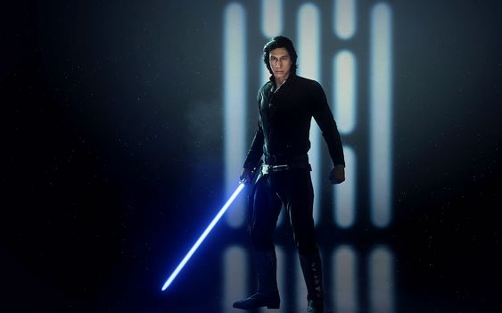

About Me
Han's son , Ben Solo
The son of Han Solo and Leia Organa, Ben Solo was seduced by the dark side of the Force and renamed himself Kylo Ren: leader of the Knights of Ren, champion of the First Order, and apprentice to Supreme Leader Snoke. Driven to destroy the past, Kylo killed his father and his master, supplanting Snoke as Supreme Leader. But he remained haunted by his father’s death, his connection with the mysterious Rey, and the pull of the good in himself. In time, all three would help Ben Solo return to the light . Love you Mommy and Daddy.
"He would bring destruction, pain, death, and the end of everything I love because of what he will become. And for the briefest moment of pure instinct, I thought I could stop it. It passed like a fleeting shadow. And I was left with shame and with consequence. And the last thing I saw were the eyes of a frightened boy whose master had failed him."
―Luke Skywalker, about Ben Solo